Unit 3 - Logistic Regression
Table of Contents
- 1. Modeling the Expert: An Introduction to Logistic Regression
<<<<<<< HEAD
- 1.1. Logistic Regression
- 1.2. Logistic Regression in R
- 1.3. Video 1: Replicating Expert Assessment
- 1.4. Video 2: Building the Dataset
- 1.5. Quick Question (2 points possible)
- 1.6. Video 3: Logistic Regression
- 1.7. Understanding the Logistic Regression Function
- 1.8. Quick Question (3 points possible)
- 1.9. Video 4: Logistic Regression in R
- 1.10. Quick Question (1 point possible)
- 1.11. Quick Question (1 point possible)
- 1.12. Video 5: Thresholding
- 1.13. The confusion matrix or classification matrix
- 1.14. Confusion matrices questions
- 1.15. Video 6: ROC Curves
- 1.16. Quick Question (2 points possible)
- 1.1. Logistic Regression
- 1.2. Logistic Regression in R
- 1.3. Video 1: Replicating Expert Assessment
- 1.4. Video 2: Building the Dataset
- 1.5. Quick Question (2 points possible)
- 1.6. Video 3: Logistic Regression
- 1.7. Understanding the Logistic Regression Function
- 1.8. Quick Question (3 points possible)
- 1.9. Video 4: Logistic Regression in R
- 1.10. Quick Question (1 point possible)
- 1.11. Quick Question (1 point possible)
- 1.12. Video 5: Thresholding
- 1.13. The confusion matrix or classification matrix
- 1.14. Confusion matrices questions
- 1.15. Video 6: ROC Curves
- 1.16. Quick Question (2 points possible)
Logistic Regression topics. For the course "MITx: 15.071x The Analytics Edge".
1 Modeling the Expert: An Introduction to Logistic Regression
1.1 Logistic Regression
The Method
Logistic regression extends the idea of linear regression to cases where the dependent variable, \(y\), only has two possible outcomes, called classes. Examples of dependent variables that could be used with logistic regression are predicting whether a new business will succeed or fail, predicting the approval or disapproval of a loan, and predicting whether a stock will increase or decrease in value. These are all called classification problems, since the goal is to figure out which class each observation belongs to.
Similar to linear regression, logistic regression uses a set of independent variables to make predictions, but instead of predicting a continuous value for the dependent variable, it instead predicts the probability of each of the possible outcomes, or classes.
Logistic regression consists of two steps. The first step is to compute the probability that an observation belongs to class 1, using the Logistic Response Function:
$$ P(y = 1) = \frac{1}{1 + e^{-(\beta_0 + \beta_1x_1 + \beta_2x_2 + \ldots + \beta_kx_k)}} $$
The coefficients, or \(\beta\) values, are selected to maximize the likelihood of predicting a high probability for observations actually belonging to class 1, and predicting a low probability for observations actually belonging to class 0.
In the second step of logistic regression, a threshold value is used to classify each observation into one of the classes. A common choice is \(0.5\), meaning that if \(P(y = 1) \geq 0.5\), the observation is classified into class 1, and if \(P(y = 1) < 0.5\), the observation is classified into class 0. Simply stated, each observation is classified into the class with the highest probability.
However, other threshold values can be chosen, and in some cases are more appropriate. The threshold value that should be selected often depends on error preferences. When the probabilities are converted into class predictions, two types of errors can be made: false positives, and false negatives. A false positive error is made when the model predicts class 1, but the observation actually belongs to class 0. A false negative error is made when the model predicts class 0, but the observation actually belongs to class 1. If a higher threshold value is selected, more false negative errors will be made. If a lower threshold value is selected, more false positive errors will be made.
One application where decision-makers often have an error preference is in disease prediction. Suppose you built a model to predict whether or not someone will develop heart disease in the next 10 years (like the model we saw in the Framingham Heart Study lecture). We will consider class 1 to be the outcome in which the person does develop heart disease, and class 0 the outcome in which the person does not develop heart disease. If you pick a high threshold, you will tend to make more false negative errors, which means that you predicted that the person would not develop heart disease, but they actually did. If you pick a lower threshold, you will tend to make more false positive errors, which means that you predicted they would develop heart disease, but they actually did not. In this case, a false positive error is often preferred. Unnecessary resources might be spent treating a patient who did not need to worry, but you did not let as many patients go untreated (which is what a false negative error does).
Now, let's consider spam filters. Almost every email provider has a built in spam filter that tries to detect whether or not an email message is spam. Let's classify spam messages as class 1 and non-spam messages as class 0. Then if we build a logistic regression model to predict spam, we will probably want to select a high threshold. Why? In this case, a false positive error means that we predicted a message was spam, and sent it to the spam folder, when it actually was not spam. We might have just sent an important email to the junk folder! On the other hand, a false negative error means that we predicted a message was not spam, when it actually was. This creates a slight annoyance for the user (since they have to delete the message from the inbox themselves) but at least an important message was not missed.
This error trade-off can be formalized with a Confusion Matrix or a Receiver Operator Characteristic Curve (ROC curve). A confusion matrix compares predicted classes with actual classes for a particular threshold value, while an ROC curve plots the false positive rate versus the true positive rate for all possible threshold values. The ROC curve motivates an important metric for classification problems: the AUC, or Area Under the Curve. The AUC of a model gives the area under the ROC curve, and is a number between 0 and 1. The higher the AUC, the more area under the ROC curve, and the better the model. The AUC of a model can be interpreted as the model's ability to distinguish between the two different classes. If the model were handed two random observations from the dataset, one belonging to one class and one belonging to the other class, the AUC gives the proportion of the time when the observation from class 1 has a higher predicted probability of being in class 1. If you were to just guess which observation was which, this would be an AUC of 0.5. So a model with an AUC greater than 0.5 is doing something smarter than just guessing, but we want the AUC of a model to be as close to 1 as possible.
1.2 Logistic Regression in R
Suppose the training data for your model is in a data frame called "TrainingData", consisting of your dependent variable "DependentVar", and your two independent variables "IndependentVar1" and "IndependentVar2". (If you just have one dataset, you can randomly split your data frame into a training set and testing set with the sample.split function.) Then you can build a logistic regression model with the following command:
LogModel = glm(DependentVar ~ IndependentVar1 + IndependentVar2,
<<<<<<< HEAD
data=TrainingData, family=binomial)
=======
data=TrainingData, family=binomial)
>>>>>>> origin/master
You can see the coefficients and other information about the model with the summary function:
summary(LogModel)
You can then create a vector of predictions for the training set and generate different confusion matrices with the predict() and table() functions:
TrainPredictions = predict(LogModel, type="response")
table(TrainingData$DependentVar, TrainPredictions >= 0.5)
table(TrainingData$DependentVar, TrainPredictions >= 0.3)
You can generate an ROC curve with the following commands (you first need to install and load the "ROCR" package):
ROC.Pred = prediction(TrainPredictions, TrainingData$DependentVar)
ROC.Perf = performance(ROC.Pred, "tpr", "fpr")
plot(ROC.Perf)
To add threshold labels and colors, replace the plot command with the following:
plot(ROC.Perf, colorize=TRUE, print.cutoffs.at=seq(0,1,by=0.1),
<<<<<<< HEAD
text.adj=c(-0.2,1.7))
=======
text.adj=c(-0.2,1.7))
>>>>>>> origin/master
The AUC of the model can be computed with the following command:
as.numeric(performance(ROC.Pred, "auc")@y.values)
To make predictions on a test set called "TestData", you can use the predict() function:
TestPredictions = predict(LogModel, newdata=TestData,
<<<<<<< HEAD
type="response")
=======
type="response")
>>>>>>> origin/master
You can then create confusion matrices, an ROC curve, and compute the AUC just like we did for the training set on the test set.
1.3 Video 1: Replicating Expert Assessment
We'll examine how analytics can model an expert, in this case a physician, in the context of assessing the quality of healthcare patients receive, and introduce a technique called logistic regression to achieve this objective.
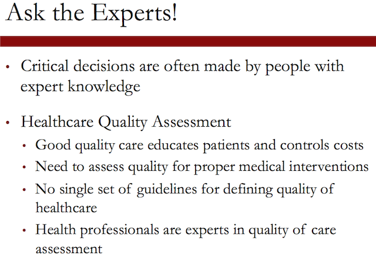
The large scale problem:

Clearly, physicians cannot assess quality for millions of patients, and D2Hawkeye had, indeed, millions of patients who receive claims data on a monthly basis that the quality of them needs to be assessed.
So the key question is as follows. Can we develop analytics tools that replicate expert assessment on a large scale?
The goal is to learn from expert human judgment by developing a model, interpret the results of the model, and further adjust the model to improve predictability. The objective is to make predictions and evaluations on a large scale basis, to be able to process millions of assessing the health care quality for millions of people.
1.4 Video 2: Building the Dataset
So let us explain what claims data is. So medical claims are generated when a patient visits a doctor. Medical claims include diagnosis code, procedures codes, as well as costs.
Pharmacy claims involve drugs, the quantity of these drugs, the prescribing doctor, as well as the medication costs. Claims data are electronically available, they are standardized, they use well-established codes.
However, since humans generate them, they are not 100% accurate.
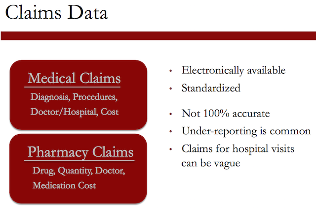
And often, under-reporting is common in the sense that it's a tedious job to record these claims, and as a result, often people under-report them. Also, claims for hospital visits can be vague.
In creating a data set, our objective was to assess quality, health care quality.
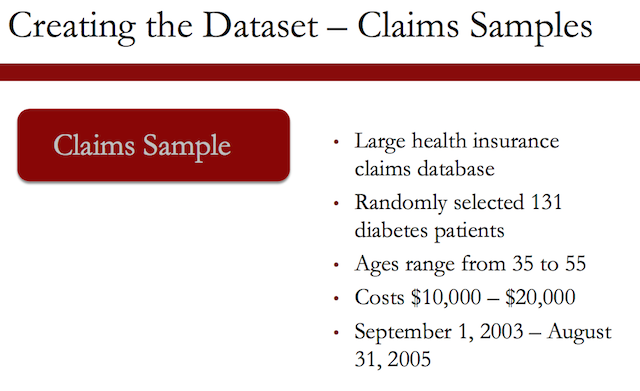
So we used a large health insurance claims database, and we randomly selected 131 diabetes patients. The ages ranged between 35 to 55 and the costs were in the neighborhood of $10,000 to $20,000.
The period in which these claims were recorded were September 1, 2003 to August 31, 2005.
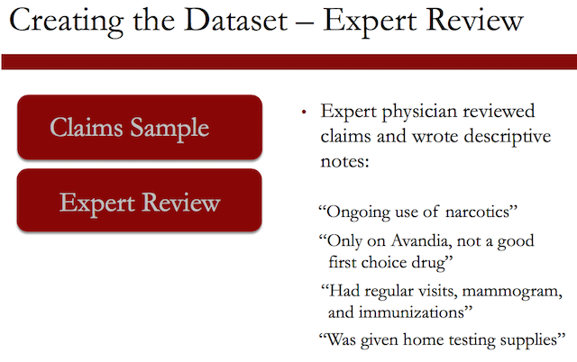
An expert physician reviewed the claims and wrote descriptive notes, like "ongoing use of narcotics"; "only on Avandia, not a good first choice drug"; "had regular visits, mammogram, and immunizations"; "was given home testing supplies".
After this review, this expert physician rated the quality of care on a two-point scale, poor or good. Examples included, I'd say care was poor. Poorly treated diabetes. Not an eye exam, but overall I'd say high quality.
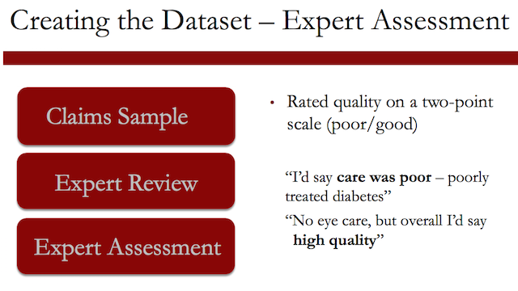
So based on these comments, we extracted variables. The dependent variable was the quality of care. The independent variables involve the ongoing use of narcotics; only on Avandia, not a good first choice drug; had regular visits, mammogram, and immunizations; was given home testing supplies.
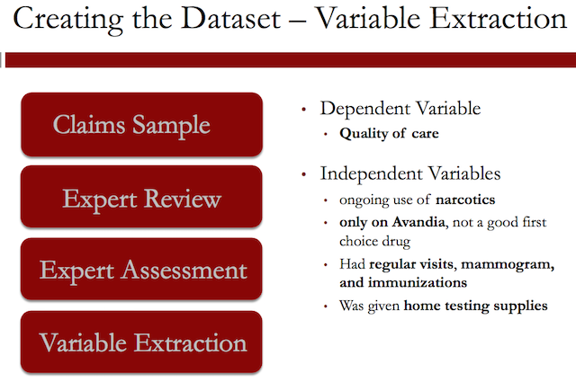
Overall, the independent variables involved diabetes treatment variables, patient demographics, health care utilization, providers, claims, and prescriptions. The dependent variable was modeled as a binary variable – 1 for low-quality care and 0 for high-quality care.
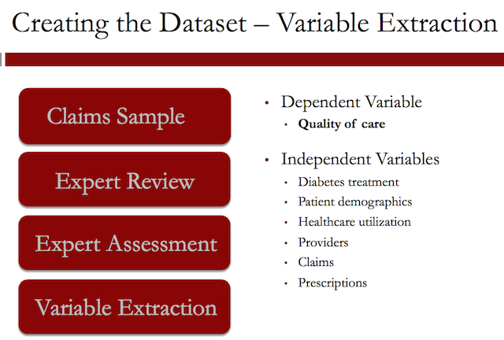
This is by its nature a categorical variable. It only takes two possible values. We have seen linear regression as a way of predicting continuous outcomes.
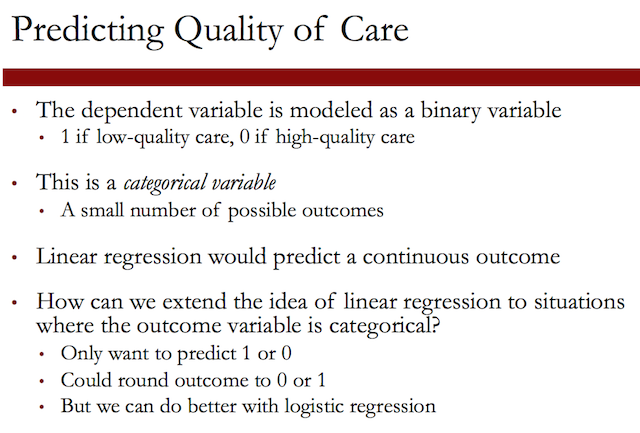
1.5 Quick Question (2 points possible)
1.5.1 Question a
Which of the following dependent variables are categorical? (Select all that apply.)
[X]Deciding whether to buy, sell, or hold a stock[ ]The weekly revenue of a company[X]The winner of an election with two candidates[X]The day of the week with the highest revenue[ ]The number of daily car thefts in New York City[X]Whether or not revenue will exceed $50,000
1.5.1.1 Answer
Explanation
The weekly revenue of a company is not categorical, since it has a large number of possible values, on a continuous range. The number of daily car thefts in New York City is also not categorical because the number of car thefts could range from 0 to hundreds.
On the other hand, the other options each have a limited number of possible outcomes.
1.5.2 Question b
Which of the following dependent variables are binary? (Select all that apply.)
[ ]Deciding whether to buy, sell, or hold a stock[ ]The weekly revenue of a company[X]The winner of an election with two candidates[ ]The day of the week with the highest revenue[ ]The number of daily car thefts in New York City[X]Whether or not revenue will exceed $50,000
1.5.2.1 Answer
Explanation
The only variables with two possible outcomes are the winner of an election with two candidates, and whether or not revenue will exceed $50,000.
1.6 Video 3: Logistic Regression
Logistic regression predicts the probability of the outcome variable being true. In this example, a logistic regression model would predict the probability that the patient is receiving poor care. Or if we denote the PoorCare variable by \(y\), the probability that \(y = 1\).
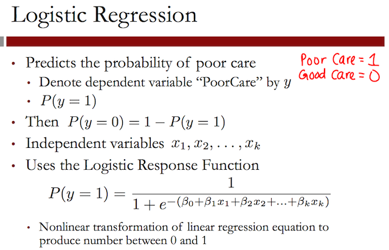
So by predicting the probability that \(y = 1\), we also get the probability that \(y = 0\). Just like in linear regression, we have a set of independent variables, \(x_1\) through \(x_k\), where \(k\) is the total number of independent variables we have.
Then to predict the probability that \(y = 1\), we use what's called the Logistic Response Function. This seems like a complicated, nonlinear equation, but you can see the familiar linear regression equation in this Logistic Response Function.
The Logistic Response Function is used to produce a number between \(0\) and \(1\).
1.7 Understanding the Logistic Regression Function
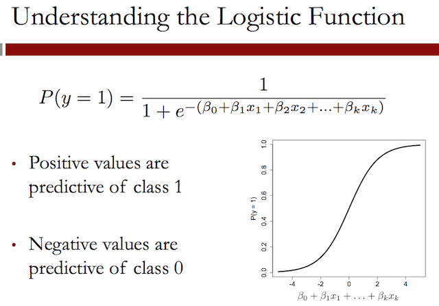
This plot shows the logistic response function for different values of the linear regression piece. The logistic response function always takes values between \(0\) and \(1\), which makes sense, since it equals a probability.
A positive coefficient value for a variable increases the linear regression piece, which increases the probability that \(y = 1\), or increases the probability of poor care. On the other hand, a negative coefficient value for a variable decreases the linear regression piece, which in turn decreases the probability that \(y = 1\), or increases the probability of good care.
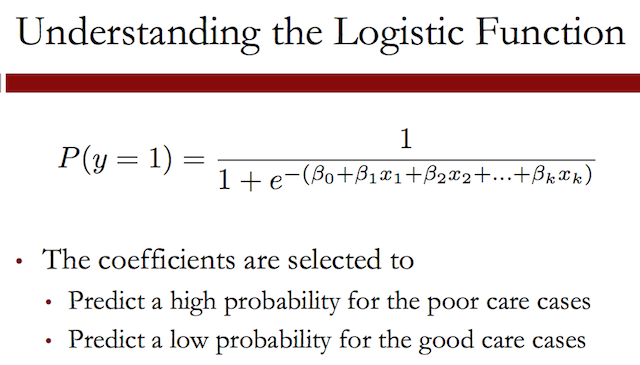
The coefficients, or betas, are selected to predict a high probability for the actual poor care cases, and to predict a low probability for the actual good care cases.
Another useful way to think about the logistic response function is in terms of Odds, like in gambling.
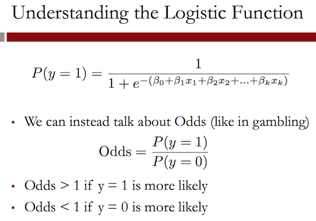
If you substitute the Logistic Response Function for the probabilities in the Odds equation.
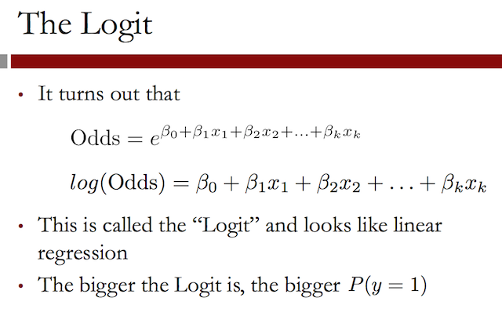
This helps us understand how the coefficients, or betas, affect our prediction of the probability. A positive \(\beta\) value increases the Logit, which in turn increases the Odds of \(1\). A negative \(\beta\) value decreases the Logit, which in turn, decreases the Odds of one.
1.8 Quick Question (3 points possible)
Suppose the coefficients of a logistic regression model with two independent variables are as follows:
$$ \beta_0 = -1.5,~ \beta_1 = 3,~\beta_2 = -0.5 $$
And we have an observation with the following values for the independent variables:
$$ x_1 = 1,~x_2 = 5 $$
1.8.1 Question a
What is the value of the Logit for this observation? Recall that the Logit is log(Odds).
$$ log(Odds) = \beta_0 + \beta_1 x_1 + \beta_2 x_2 $$
beta0 <- -1.5; beta1 <- 3; beta2 <- -0.5; <<<<<<< HEAD x1 <- 1; x2 <- 5 logit <- beta0 + (beta1 * x1) + (beta2 * x2) writeLines("\n :: The value of logit is:") logit ======= x1 <- 1; x2 <- 5 logit <- beta0 + (beta1 * x1) + (beta2 * x2) writeLines("\n :: The value of logit is:") logit >>>>>>> origin/master
<<<<<<< HEAD
:: The value of logit is:
[1] -1
=======
:: The value of logit is:
[1] -1
>>>>>>> origin/master
1.8.1.1 Answer
Explanation
The Logit is just log(Odds), and looks like the linear regression equation. So the Logit is -1.5 + 3*1 - 0.5*5 = -1.
1.8.2 Question b
What is the value of the Odds for this observation? Note that you can compute e^x, for some number x, in your R console by typing exp(x). The function exp() computes the exponential of its argument.
writeLines("\n :: The value of odds is:")
<<<<<<< HEAD
exp(logit)
=======
exp(logit)
>>>>>>> origin/master
<<<<<<< HEAD
:: The value of odds is:
[1] 0.3678794
=======
:: The value of odds is:
[1] 0.3678794
>>>>>>> origin/master
1.8.2.1 Answer
Explanation
Using the value of the Logit from the previous question, we have that Odds = e^(-1) = 0.3678794.
1.8.3 Question c
What is the value of P(y = 1) for this observation?
P <- 1 / (1 + exp(-logit)) <<<<<<< HEAD writeLines("\n :: The probability of P(y = 1) is:") P ======= writeLines("\n :: The probability of P(y = 1) is:") P >>>>>>> origin/master
<<<<<<< HEAD
:: The probability of P(y = 1) is:
[1] 0.2689414
=======
:: The probability of P(y = 1) is:
[1] 0.2689414
>>>>>>> origin/master
1.8.3.1 Answer
Explanation
Using the Logistic Response Function, we can compute that P(y = 1) = 1/(1 + e^(-Logit)) = 1/(1 + e^(1)) = 0.2689414.
1.9 Video 4: Logistic Regression in R
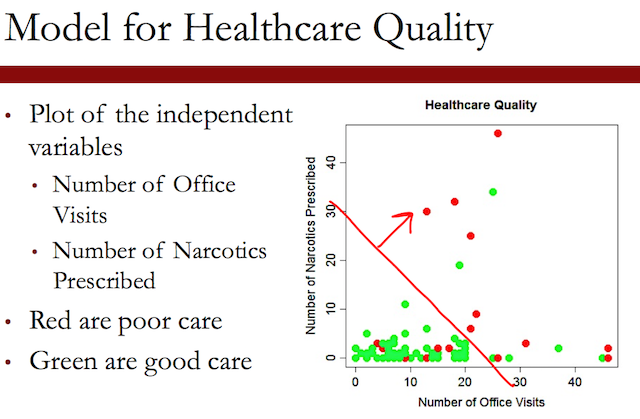
This plot shows two of our independent variables, the number of office visits on the x-axis and the number of narcotics prescribed on the y-axis. Each point is an observation or a patient in our data set. The red points are patients who received poor care, and the green points are patients who received good care.
It's hard to see a trend in the data by just visually inspecting it. But it looks like maybe more office visits and more narcotics, or data points to the right of this line, are more likely to have poor care.
We'll be using the dataset quality.csv to build a logistic regression model in R. Please download this file to follow along.
An R script file with all of the commands used in this lecture can be downloaded here.
1.9.1 Download the data sets
In this part we can download the data
library(parallel) <<<<<<< HEAD if(!file.exists("../data")) { dir.create("../data") } fileUrl <- "https://courses.edx.org/asset-v1:MITx+15.071x_2a+2T2015+type@asset+block/quality.csv" fileName <- "quality.csv" dataPath <- "../data" filePath <- paste(dataPath, fileName, sep = "/") if(!file.exists(filePath)) { download.file(fileUrl, destfile = filePath, method = "curl") } list.files("../data") ======= if(!file.exists("../data")) { dir.create("../data") } fileUrl <- "https://courses.edx.org/asset-v1:MITx+15.071x_2a+2T2015+type@asset+block/quality.csv" fileName <- "quality.csv" dataPath <- "../data" filePath <- paste(dataPath, fileName, sep = "/") if(!file.exists(filePath)) { download.file(fileUrl, destfile = filePath, method = "curl") } list.files("../data") >>>>>>> origin/master
<<<<<<< HEAD
[1] "AnonymityPoll.csv" "BoeingStock.csv" "CPSData.csv"
[4] "CocaColaStock.csv" "CountryCodes.csv" "FluTest.csv"
[7] "FluTrain.csv" "GEStock.csv" "IBMStock.csv"
[10] "MetroAreaCodes.csv" "NBA_test.csv" "NBA_train.csv"
[13] "ProcterGambleStock.csv" "README.md" "USDA.csv"
[16] "WHO.csv" "WHO_Europe.csv" "baseball.csv"
[19] "climate_change.csv" "mvtWeek1.csv" "pisa2009test.csv"
[22] "pisa2009train.csv" "quality.csv" "wine.csv"
[25] "wine_test.csv"
=======
[1] "AnonymityPoll.csv" "BoeingStock.csv" "CPSData.csv"
[4] "CocaColaStock.csv" "CountryCodes.csv" "FluTest.csv"
[7] "FluTrain.csv" "GEStock.csv" "IBMStock.csv"
[10] "MetroAreaCodes.csv" "NBA_test.csv" "NBA_train.csv"
[13] "ProcterGambleStock.csv" "README.md" "USDA.csv"
[16] "WHO.csv" "WHO_Europe.csv" "baseball.csv"
[19] "climate_change.csv" "mvtWeek1.csv" "pisa2009test.csv"
[22] "pisa2009train.csv" "quality.csv" "wine.csv"
[25] "wine_test.csv"
>>>>>>> origin/master
1.9.2 Load the data set
writeLines(" Loading data into their data frames.") <<<<<<< HEAD quality <- read.table("../data/quality.csv", sep = ",", header = TRUE) str(quality) summary(quality) ======= quality <- read.table("../data/quality.csv", sep = ",", header = TRUE) str(quality) summary(quality) >>>>>>> origin/master
<<<<<<< HEAD
Loading data into their data frames.
'data.frame': 131 obs. of 14 variables:
$ MemberID : int 1 2 3 4 5 6 7 8 9 10 ...
$ InpatientDays : int 0 1 0 0 8 2 16 2 2 4 ...
$ ERVisits : int 0 1 0 1 2 0 1 0 1 2 ...
$ OfficeVisits : int 18 6 5 19 19 9 8 8 4 0 ...
$ Narcotics : int 1 1 3 0 3 2 1 0 3 2 ...
$ DaysSinceLastERVisit: num 731 411 731 158 449 ...
$ Pain : int 10 0 10 34 10 6 4 5 5 2 ...
$ TotalVisits : int 18 8 5 20 29 11 25 10 7 6 ...
$ ProviderCount : int 21 27 16 14 24 40 19 11 28 21 ...
$ MedicalClaims : int 93 19 27 59 51 53 40 28 20 17 ...
$ ClaimLines : int 222 115 148 242 204 156 261 87 98 66 ...
$ StartedOnCombination: logi FALSE FALSE FALSE FALSE FALSE FALSE ...
$ AcuteDrugGapSmall : int 0 1 5 0 0 4 0 0 0 0 ...
$ PoorCare : int 0 0 0 0 0 1 0 0 1 0 ...
MemberID InpatientDays ERVisits OfficeVisits
Min. : 1.0 Min. : 0.000 Min. : 0.000 Min. : 0.00
1st Qu.: 33.5 1st Qu.: 0.000 1st Qu.: 0.000 1st Qu.: 7.00
Median : 66.0 Median : 0.000 Median : 1.000 Median :12.00
Mean : 66.0 Mean : 2.718 Mean : 1.496 Mean :13.23
3rd Qu.: 98.5 3rd Qu.: 3.000 3rd Qu.: 2.000 3rd Qu.:18.50
Max. :131.0 Max. :30.000 Max. :11.000 Max. :46.00
Narcotics DaysSinceLastERVisit Pain TotalVisits
Min. : 0.000 Min. : 6.0 Min. : 0.00 Min. : 0.00
1st Qu.: 0.000 1st Qu.:207.0 1st Qu.: 1.00 1st Qu.: 8.00
Median : 1.000 Median :641.0 Median : 8.00 Median :15.00
Mean : 4.573 Mean :480.6 Mean : 15.56 Mean :17.44
3rd Qu.: 3.000 3rd Qu.:731.0 3rd Qu.: 23.00 3rd Qu.:22.50
Max. :59.000 Max. :731.0 Max. :104.00 Max. :69.00
ProviderCount MedicalClaims ClaimLines StartedOnCombination
Min. : 5.00 Min. : 11.00 Min. : 20.0 Mode :logical
1st Qu.:15.00 1st Qu.: 25.50 1st Qu.: 83.5 FALSE:125
Median :20.00 Median : 37.00 Median :120.0 TRUE :6
Mean :23.98 Mean : 43.24 Mean :142.9 NA's :0
3rd Qu.:30.00 3rd Qu.: 49.50 3rd Qu.:185.0
Max. :82.00 Max. :194.00 Max. :577.0
AcuteDrugGapSmall PoorCare
Min. : 0.000 Min. :0.0000
1st Qu.: 0.000 1st Qu.:0.0000
Median : 1.000 Median :0.0000
Mean : 2.695 Mean :0.2519
3rd Qu.: 3.000 3rd Qu.:0.5000
Max. :71.000 Max. :1.0000
=======
Loading data into their data frames.
'data.frame': 131 obs. of 14 variables:
$ MemberID : int 1 2 3 4 5 6 7 8 9 10 ...
$ InpatientDays : int 0 1 0 0 8 2 16 2 2 4 ...
$ ERVisits : int 0 1 0 1 2 0 1 0 1 2 ...
$ OfficeVisits : int 18 6 5 19 19 9 8 8 4 0 ...
$ Narcotics : int 1 1 3 0 3 2 1 0 3 2 ...
$ DaysSinceLastERVisit: num 731 411 731 158 449 ...
$ Pain : int 10 0 10 34 10 6 4 5 5 2 ...
$ TotalVisits : int 18 8 5 20 29 11 25 10 7 6 ...
$ ProviderCount : int 21 27 16 14 24 40 19 11 28 21 ...
$ MedicalClaims : int 93 19 27 59 51 53 40 28 20 17 ...
$ ClaimLines : int 222 115 148 242 204 156 261 87 98 66 ...
$ StartedOnCombination: logi FALSE FALSE FALSE FALSE FALSE FALSE ...
$ AcuteDrugGapSmall : int 0 1 5 0 0 4 0 0 0 0 ...
$ PoorCare : int 0 0 0 0 0 1 0 0 1 0 ...
MemberID InpatientDays ERVisits OfficeVisits
Min. : 1.0 Min. : 0.000 Min. : 0.000 Min. : 0.00
1st Qu.: 33.5 1st Qu.: 0.000 1st Qu.: 0.000 1st Qu.: 7.00
Median : 66.0 Median : 0.000 Median : 1.000 Median :12.00
Mean : 66.0 Mean : 2.718 Mean : 1.496 Mean :13.23
3rd Qu.: 98.5 3rd Qu.: 3.000 3rd Qu.: 2.000 3rd Qu.:18.50
Max. :131.0 Max. :30.000 Max. :11.000 Max. :46.00
Narcotics DaysSinceLastERVisit Pain TotalVisits
Min. : 0.000 Min. : 6.0 Min. : 0.00 Min. : 0.00
1st Qu.: 0.000 1st Qu.:207.0 1st Qu.: 1.00 1st Qu.: 8.00
Median : 1.000 Median :641.0 Median : 8.00 Median :15.00
Mean : 4.573 Mean :480.6 Mean : 15.56 Mean :17.44
3rd Qu.: 3.000 3rd Qu.:731.0 3rd Qu.: 23.00 3rd Qu.:22.50
Max. :59.000 Max. :731.0 Max. :104.00 Max. :69.00
ProviderCount MedicalClaims ClaimLines StartedOnCombination
Min. : 5.00 Min. : 11.00 Min. : 20.0 Mode :logical
1st Qu.:15.00 1st Qu.: 25.50 1st Qu.: 83.5 FALSE:125
Median :20.00 Median : 37.00 Median :120.0 TRUE :6
Mean :23.98 Mean : 43.24 Mean :142.9 NA's :0
3rd Qu.:30.00 3rd Qu.: 49.50 3rd Qu.:185.0
Max. :82.00 Max. :194.00 Max. :577.0
AcuteDrugGapSmall PoorCare
Min. : 0.000 Min. :0.0000
1st Qu.: 0.000 1st Qu.:0.0000
Median : 1.000 Median :0.0000
Mean : 2.695 Mean :0.2519
3rd Qu.: 3.000 3rd Qu.:0.5000
Max. :71.000 Max. :1.0000
>>>>>>> origin/master
We'll be using the number of office visits and the number of prescriptions for narcotics that the patient had.
1.9.3 Data dictionary
The variables in the dataset quality.csv are as follows:
- MemberID numbers the patients from 1 to 131, and is just an <<<<<<< HEAD identifying number.
- InpatientDays is the number of inpatient visits, or number of days the person spent in the hospital.
- ERVisits is the number of times the patient visited the emergency room.
- OfficeVisits is the number of times the patient visited any doctor's office.
- Narcotics is the number of prescriptions the patient had for narcotics.
- DaysSinceLastERVisit is the number of days between the patient's last emergency room visit and the end of the study period (set to the length of the study period if they never visited the ER).
- Pain is the number of visits for which the patient complained about pain.
- TotalVisits is the total number of times the patient visited any healthcare provider. ======= identifying number.
- InpatientDays is the number of inpatient visits, or number of days the person spent in the hospital.
- ERVisits is the number of times the patient visited the emergency room.
- OfficeVisits is the number of times the patient visited any doctor's office.
- Narcotics is the number of prescriptions the patient had for narcotics.
- DaysSinceLastERVisit is the number of days between the patient's last emergency room visit and the end of the study period (set to the length of the study period if they never visited the ER).
- Pain is the number of visits for which the patient complained about pain.
- TotalVisits is the total number of times the patient visited any healthcare provider. >>>>>>> origin/master
- ProviderCount is the number of providers that served the patient.
- MedicalClaims is the number of days on which the patient had a <<<<<<< HEAD medical claim. ======= medical claim. >>>>>>> origin/master
- ClaimLines is the total number of medical claims.
- StartedOnCombination is whether or not the patient was started on <<<<<<< HEAD a combination of drugs to treat their diabetes (TRUE or FALSE).
- AcuteDrugGapSmall is the fraction of acute drugs that were refilled quickly after the prescription ran out.
- PoorCare is the outcome or dependent variable, and is equal to 1 if the patient had poor care, and equal to 0 if the patient had good care. ======= a combination of drugs to treat their diabetes (TRUE or FALSE).
- AcuteDrugGapSmall is the fraction of acute drugs that were refilled quickly after the prescription ran out.
- PoorCare is the outcome or dependent variable, and is equal to 1 if the patient had poor care, and equal to 0 if the patient had good care. >>>>>>> origin/master
In this part we learned how to use the sample.split() function from
the caTools package to split data for a classification problem,
balancing the positive and negative observations in the training and
testing sets.
If you wanted to instead split a data frame data, where the dependent
variable is a continuous outcome (this was the case for all the
datasets we used last week), you could instead use the sample()
function. Here is how to select \(70\%\) of observations for the training
set (called train) and \(30\%\) of observations for the testing set
(called test):
spl = sample(1:nrow(data), size=0.7 * nrow(data))
train = data[spl,]
test = data[-spl,]
1.9.4 Logistic Regression model building
In a classification problem, a standard baseline method is to just predict the most frequent outcome for all observations.
Since good care is more common than poor care, in this case, we would predict that all patients are receiving good care. If we did this, we would get \(98\) out of the \(131\) observations correct, or have an accuracy of about \(75\%\).
So our baseline model has an accuracy of \(75\%\). This is what we'll try to beat with our logistic regression model.
we only have one data set. So we want to randomly split our data set into a training set and testing set so that we'll have a test set to measure our out-of-sample accuracy.
writeLines("\n :: Install and load caTools package (Only once)") <<<<<<< HEAD ## install.packages('caTools', repos='http://cran.rstudio.com/') library(caTools) writeLines("\n :: Randomly split data") set.seed(88) split <- sample.split(quality$PoorCare, SplitRatio = 0.75) head(split) ======= ## install.packages('caTools', repos='http://cran.rstudio.com/') library(caTools) writeLines("\n :: Randomly split data") set.seed(88) split <- sample.split(quality$PoorCare, SplitRatio = 0.75) head(split) >>>>>>> origin/master
<<<<<<< HEAD
:: Install and load caTools package (Only once)
:: Randomly split data
[1] TRUE TRUE TRUE TRUE FALSE TRUE
=======
:: Install and load caTools package (Only once)
:: Randomly split data
[1] TRUE TRUE TRUE TRUE FALSE TRUE
>>>>>>> origin/master
Since sample.split randomly splits your data, it could split it differently for each of us. To make sure that we all get the same split, we'll set our seed. This initializes the random number generator.
Sample.split randomly splits the data. But it also makes sure that
the outcome variable is well-balanced in each piece. We saw earlier
that about \(75\%\) of our patients are receiving good care.
This function makes sure that in our training set, \(75\%\) of our patients are receiving good care and in our testing set \(75\%\) of our patients are receiving good care.
1.9.5 Building the training and the testing sets
writeLines("\n :: Create training and testing sets") <<<<<<< HEAD qualityTrain <- subset(quality, split == TRUE) qualityTest <- subset(quality, split == FALSE) writeLines("\n :: The number of observations in the training set") nrow(qualityTrain) writeLines("\n :: The number of observations in the testing set") nrow(qualityTest) ======= qualityTrain <- subset(quality, split == TRUE) qualityTest <- subset(quality, split == FALSE) writeLines("\n :: The number of observations in the training set") nrow(qualityTrain) writeLines("\n :: The number of observations in the testing set") nrow(qualityTest) >>>>>>> origin/master
<<<<<<< HEAD
:: Create training and testing sets
:: The number of observations in the training set
[1] 99
:: The number of observations in the testing set
[1] 32
=======
:: Create training and testing sets
:: The number of observations in the training set
[1] 99
:: The number of observations in the testing set
[1] 32
>>>>>>> origin/master
We are ready to build a logistic regression model using OfficeVisits and Narcotics as independent variables.
writeLines("\n :: First Logistic Regression Model") <<<<<<< HEAD QualityLog <- glm(PoorCare ~ OfficeVisits + Narcotics, data=qualityTrain, family = binomial) summary(QualityLog) ======= QualityLog <- glm(PoorCare ~ OfficeVisits + Narcotics, data=qualityTrain, family = binomial) summary(QualityLog) >>>>>>> origin/master
<<<<<<< HEAD
:: First Logistic Regression Model
Call:
glm(formula = PoorCare ~ OfficeVisits + Narcotics, family = binomial,
data = qualityTrain)
Deviance Residuals:
Min 1Q Median 3Q Max
-2.06303 -0.63155 -0.50503 -0.09689 2.16686
Coefficients:
Estimate Std. Error z value Pr(>|z|)
(Intercept) -2.64613 0.52357 -5.054 4.33e-07 ***
OfficeVisits 0.08212 0.03055 2.688 0.00718 **
Narcotics 0.07630 0.03205 2.381 0.01728 *
---
Signif. codes: 0 '***' 0.001 '**' 0.01 '*' 0.05 '.' 0.1 ' ' 1
(Dispersion parameter for binomial family taken to be 1)
Null deviance: 111.888 on 98 degrees of freedom
Residual deviance: 89.127 on 96 degrees of freedom
AIC: 95.127
Number of Fisher Scoring iterations: 4
=======
:: First Logistic Regression Model
Call:
glm(formula = PoorCare ~ OfficeVisits + Narcotics, family = binomial,
data = qualityTrain)
Deviance Residuals:
Min 1Q Median 3Q Max
-2.06303 -0.63155 -0.50503 -0.09689 2.16686
Coefficients:
Estimate Std. Error z value Pr(>|z|)
(Intercept) -2.64613 0.52357 -5.054 4.33e-07 ***
OfficeVisits 0.08212 0.03055 2.688 0.00718 **
Narcotics 0.07630 0.03205 2.381 0.01728 *
---
Signif. codes: 0 '***' 0.001 '**' 0.01 '*' 0.05 '.' 0.1 ' ' 1
(Dispersion parameter for binomial family taken to be 1)
Null deviance: 111.888 on 98 degrees of freedom
Residual deviance: 89.127 on 96 degrees of freedom
AIC: 95.127
Number of Fisher Scoring iterations: 4
>>>>>>> origin/master
This gives the estimate values for the coefficients, or the betas, for our logistic regression model. We see here that the coefficients for OfficeVisits and Narcotics are both positive, which means that higher values in these two variables are indicative of poor care as we suspected from looking at the data.
We also see that both of these variables have at least one star, meaning that they're significant in our model.
The preferred model is the one with the minimum AIC.
1.9.6 Predictions in the training set
writeLines("\n :: Make predictions on training set") <<<<<<< HEAD predictTrain <- predict(QualityLog, type = "response") ======= predictTrain <- predict(QualityLog, type = "response") >>>>>>> origin/master
<<<<<<< HEAD
:: Make predictions on training set
=======
:: Make predictions on training set
>>>>>>> origin/master
The second argument which is type="response". This tells the predict function to give us probabilities. Let's take a look at the statistical summary of our predictions.
writeLines("\n :: Analyze predictions")
<<<<<<< HEAD
summary(predictTrain)
tapply(predictTrain, qualityTrain$PoorCare, mean)
=======
summary(predictTrain)
tapply(predictTrain, qualityTrain$PoorCare, mean)
>>>>>>> origin/master
<<<<<<< HEAD
:: Analyze predictions
Min. 1st Qu. Median Mean 3rd Qu. Max.
0.06623 0.11910 0.15970 0.25250 0.26760 0.98460
0 1
0.1894512 0.4392246
=======
:: Analyze predictions
Min. 1st Qu. Median Mean 3rd Qu. Max.
0.06623 0.11910 0.15970 0.25250 0.26760 0.98460
0 1
0.1894512 0.4392246
>>>>>>> origin/master
Since we're expecting probabilities, all of the numbers should be between zero and one. And we see that the minimum value is about \(0.07\) and the maximum value is \(0.98\).
Let's see if we're predicting higher probabilities for the actual poor
care cases as we expect. Using the tapply function. So we see that
for all of the true poor care cases, we predict an average probability
of about \(0.44\). And all of the true good care cases, we predict an
average probability of about \(0.19\).
So this is a good sign, because it looks like we're predicting a <<<<<<< HEAD higher probability for the actual poor care cases. ======= higher probability for the actual poor care cases. >>>>>>> origin/master
1.10 Quick Question (1 point possible)
In R, create a logistic regression model to predict "PoorCare" using the independent variables "StartedOnCombination" and "ProviderCount". Use the training set we created in the previous video to build the model.
Note: If you haven't already loaded and split the data in R, please run these commands in your R console to load and split the data set. Remember to first navigate to the directory where you have saved "quality.csv".
quality = read.csv("quality.csv")
install.packages("caTools")
library(caTools)
set.seed(88)
split = sample.split(quality$PoorCare, SplitRatio = 0.75)
qualityTrain = subset(quality, split == TRUE)
qualityTest = subset(quality, split == FALSE)
Then recall that we built a logistic regression model to predict PoorCare using the R command:
writeLines("\n :: create a logistic regression model to predict PoorCare using <<<<<<< HEAD the independent variables StartedOnCombination and ProviderCount:") QualityLog2 <- glm(PoorCare ~ StartedOnCombination + ProviderCount, data = qualityTrain, family = binomial) summary(QualityLog2) ======= the independent variables StartedOnCombination and ProviderCount:") QualityLog2 <- glm(PoorCare ~ StartedOnCombination + ProviderCount, data = qualityTrain, family = binomial) summary(QualityLog2) >>>>>>> origin/master
<<<<<<< HEAD
:: create a logistic regression model to predict PoorCare using
the independent variables StartedOnCombination and ProviderCount:
Call:
glm(formula = PoorCare ~ StartedOnCombination + ProviderCount,
family = binomial, data = qualityTrain)
Deviance Residuals:
Min 1Q Median 3Q Max
-1.61826 -0.72782 -0.64555 -0.08407 1.94662
Coefficients:
Estimate Std. Error z value Pr(>|z|)
(Intercept) -2.00097 0.55097 -3.632 0.000282 ***
StartedOnCombinationTRUE 1.95230 1.22342 1.596 0.110541
ProviderCount 0.03366 0.01983 1.697 0.089706 .
---
Signif. codes: 0 '***' 0.001 '**' 0.01 '*' 0.05 '.' 0.1 ' ' 1
(Dispersion parameter for binomial family taken to be 1)
Null deviance: 111.89 on 98 degrees of freedom
Residual deviance: 104.37 on 96 degrees of freedom
AIC: 110.37
Number of Fisher Scoring iterations: 4
=======
:: create a logistic regression model to predict PoorCare using
the independent variables StartedOnCombination and ProviderCount:
Call:
glm(formula = PoorCare ~ StartedOnCombination + ProviderCount,
family = binomial, data = qualityTrain)
Deviance Residuals:
Min 1Q Median 3Q Max
-1.61826 -0.72782 -0.64555 -0.08407 1.94662
Coefficients:
Estimate Std. Error z value Pr(>|z|)
(Intercept) -2.00097 0.55097 -3.632 0.000282 ***
StartedOnCombinationTRUE 1.95230 1.22342 1.596 0.110541
ProviderCount 0.03366 0.01983 1.697 0.089706 .
---
Signif. codes: 0 '***' 0.001 '**' 0.01 '*' 0.05 '.' 0.1 ' ' 1
(Dispersion parameter for binomial family taken to be 1)
Null deviance: 111.89 on 98 degrees of freedom
Residual deviance: 104.37 on 96 degrees of freedom
AIC: 110.37
Number of Fisher Scoring iterations: 4
>>>>>>> origin/master
You will need to adjust this command to answer this question, and then
look at the summary(QualityLog) output.
What is the coefficient for StartedOnCombination?
1.10.1 Answer
If you look at the output of summary(Model), the value of the
coefficient (Estimate) for StartedOnCombination is \(1.95230\).
1.11 Quick Question (1 point possible)
StartedOnCombination is a binary variable, which equals \(1\) if the patient is started on a combination of drugs to treat their diabetes, and equals \(0\) if the patient is not started on a combination of drugs. All else being equal, does this model imply that starting a patient on a combination of drugs is indicative of poor care, or good care?
1.11.1 Answer
Explanation
The coefficient value is positive, meaning that positive values of the variable make the outcome of \(1\) more likely. This corresponds to Poor Care.
1.12 Video 5: Thresholding
Often, we want to make an actual prediction. Should we predict \(1\) for poor care, or should we predict \(0\) for good care? We can convert the probabilities to predictions using what's called a threshold value, \(t\).
If the probability of poor care is greater than this threshold value, \(t\), we predict poor quality care. But if the probability of poor care is less than the threshold value, \(t\), then we predict good quality care.
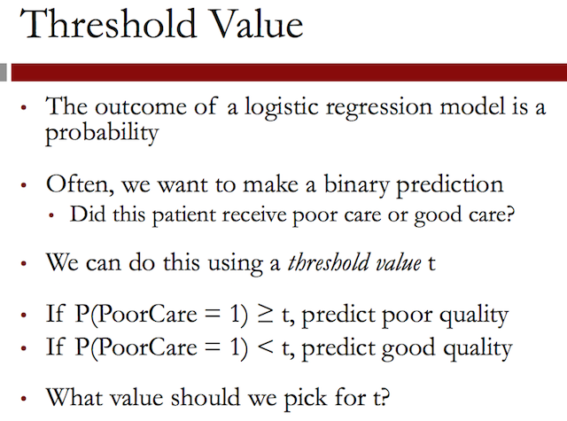
What value should we pick for the threshold, t?
The threshold value, \(t\), is often selected based on which errors are better. You might be thinking that making no errors is better, which is, of course, true.
But it's rare to have a model that predicts perfectly, so you're bound to make some errors. There are two types of errors that a model can make –ones where you predict \(1\), or poor care, but the actual outcome is \(0\), and ones where you predict \(0\), or good care, but the actual outcome is \(1\).
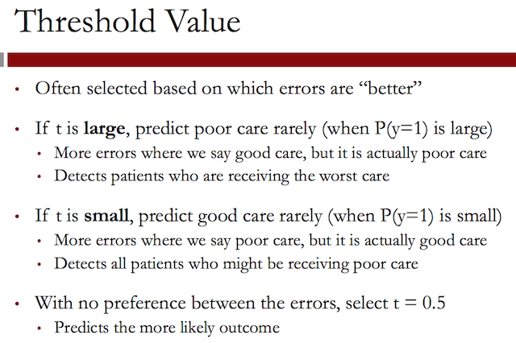
- The large \(t\) selection approach would detect the patients receiving
the worst care and prioritize them for intervention.
- The small \(t\) selection approach would detect all patients who might
be receiving poor care.
Some decision-makers often have a preference for one type of error over the other, which should influence the threshold value they pick.
1.13 The confusion matrix or classification matrix
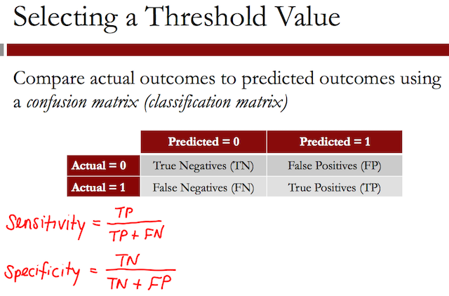
The rows are labeled with the actual outcome, and the columns are labeled with the predicted outcome.
Each entry of the table gives the number of data observations that fall into that category. So the number of true negatives, or TN, is the number of observations that are actually good care and for which we predict good care.
The true positives, or TP, is the number of observations that are actually poor care and for which we predict poor care. These are the two types that we get correct.
The false positives, or FP, are the number of data points for which we predict poor care, but they're actually good care. And the false negatives, or FN, are the number of data points for which we predict good care, but they're actually poor care.
- The Sensitivity is often called the true positive rate and <<<<<<< HEAD measures the percentage of actual poor care cases that we classify correctly.
- The Specificity is called the true negative rate and measures the percentage of actual good care cases that we classify correctly. ======= measures the percentage of actual poor care cases that we classify correctly.
- The Specificity is called the true negative rate and measures the percentage of actual good care cases that we classify correctly. >>>>>>> origin/master
A model with a higher threshold will have a lower sensitivity and a higher specificity. A model with a lower threshold will have a higher sensitivity and a lower specificity.
writeLines("\n :: Confusion matrix for threshold of 0.5:") <<<<<<< HEAD table(qualityTrain$PoorCare, predictTrain > 0.5) writeLines("\n :: Sensitivity:") 10/25 writeLines("\n :: Specificity:") 70/74 ======= table(qualityTrain$PoorCare, predictTrain > 0.5) writeLines("\n :: Sensitivity:") 10/25 writeLines("\n :: Specificity:") 70/74 >>>>>>> origin/master
<<<<<<< HEAD
:: Confusion matrix for threshold of 0.5:
FALSE TRUE
0 70 4
1 15 10
:: Sensitivity:
[1] 0.4
:: Specificity:
[1] 0.9459459
=======
:: Confusion matrix for threshold of 0.5:
FALSE TRUE
0 70 4
1 15 10
:: Sensitivity:
[1] 0.4
:: Specificity:
[1] 0.9459459
>>>>>>> origin/master
So you can see here that for \(70\) cases, we predict good care and they actually received good care, and for \(10\) cases, we predict poor care, and they actually received poor care.
We make \(4\) mistakes where we say poor care and it's actually good care, and we make \(15\) mistakes where we say good care, but it's actually poor care.
Now we can experiment with a higher threshold:
writeLines("\n :: Confusion matrix for threshold of 0.7") <<<<<<< HEAD table(qualityTrain$PoorCare, predictTrain > 0.7) writeLines("\n :: Sensitivity:") 8/25 writeLines("\n :: Specificity:") 73/74 ======= table(qualityTrain$PoorCare, predictTrain > 0.7) writeLines("\n :: Sensitivity:") 8/25 writeLines("\n :: Specificity:") 73/74 >>>>>>> origin/master
<<<<<<< HEAD
:: Confusion matrix for threshold of 0.7
FALSE TRUE
0 73 1
1 17 8
:: Sensitivity:
[1] 0.32
:: Specificity:
[1] 0.9864865
=======
:: Confusion matrix for threshold of 0.7
FALSE TRUE
0 73 1
1 17 8
:: Sensitivity:
[1] 0.32
:: Specificity:
[1] 0.9864865
>>>>>>> origin/master
So by increasing the threshold, our sensitivity went down and our specificity went up.
If now we choose a small threshold:
writeLines("\n :: Confusion matrix for threshold of 0.2") <<<<<<< HEAD table(qualityTrain$PoorCare, predictTrain > 0.2) writeLines("\n :: Sensitivity:") 16/25 writeLines("\n :: Specificity:") 54/74 ======= table(qualityTrain$PoorCare, predictTrain > 0.2) writeLines("\n :: Sensitivity:") 16/25 writeLines("\n :: Specificity:") 54/74 >>>>>>> origin/master
<<<<<<< HEAD
:: Confusion matrix for threshold of 0.2
FALSE TRUE
0 54 20
1 9 16
:: Sensitivity:
[1] 0.64
:: Specificity:
[1] 0.7297297
=======
:: Confusion matrix for threshold of 0.2
FALSE TRUE
0 54 20
1 9 16
:: Sensitivity:
[1] 0.64
:: Specificity:
[1] 0.7297297
>>>>>>> origin/master
So with the lower threshold, our sensitivity went up, and our specificity went down.
But which threshold should we pick? Maybe \(0.4\) is better, or \(0.6\). How do we decide?
1.14 Confusion matrices questions
This question asks about the following two confusion matrices:
1.14.1 Confusion Matrix #1:
| Predicted = 0 | Predicted = 1 | |
|---|---|---|
| Actual = 0 | 15 | 10 |
| Actual = 1 | 5 | 20 |
TP <- 20; TN <- 15; FP <- 10; FN <- 5; <<<<<<< HEAD writeLines("\n :: Sensitivity:") Sensitivity <- TP / (TP + FN) Sensitivity writeLines("\n :: Specificity:") Specificity <- TN / (TN + FP) Specificity ======= writeLines("\n :: Sensitivity:") Sensitivity <- TP / (TP + FN) Sensitivity writeLines("\n :: Specificity:") Specificity <- TN / (TN + FP) Specificity >>>>>>> origin/master
<<<<<<< HEAD
:: Sensitivity:
[1] 0.8
:: Specificity:
[1] 0.6
=======
:: Sensitivity:
[1] 0.8
:: Specificity:
[1] 0.6
>>>>>>> origin/master
1.14.1.1 Answer
Explanation
The sensitivity of a confusion matrix is the true positives, divided by the true positives plus the false negatives. In this case, it is 20/(20+5) = 0.8
Explanation
The specificity of a confusion matrix is the true negatives, divided by the true negatives plus the false positives. In this case, it is 15/(15+10) = 0.6
1.14.2 Confusion Matrix #2:
| Predicted = 0 | Predicted = 1 | |
|---|---|---|
| Actual = 0 | 20 | 5 |
| Actual = 1 | 10 | 15 |
TP <- 15; TN <- 20; FP <- 5; FN <- 10; <<<<<<< HEAD writeLines("\n :: Sensitivity:") Sensitivity <- TP / (TP + FN) Sensitivity writeLines("\n :: Specificity:") Specificity <- TN / (TN + FP) Specificity ======= writeLines("\n :: Sensitivity:") Sensitivity <- TP / (TP + FN) Sensitivity writeLines("\n :: Specificity:") Specificity <- TN / (TN + FP) Specificity >>>>>>> origin/master
<<<<<<< HEAD
:: Sensitivity:
[1] 0.6
:: Specificity:
[1] 0.8
=======
:: Sensitivity:
[1] 0.6
:: Specificity:
[1] 0.8
>>>>>>> origin/master
1.14.2.1 Answer
The Sensitivity in the matrix 1 was \(0.8\) and was \(0.6\) in the second matrix, then the threshold went up.
Explanation
We predict the outcome 1 less often in Confusion Matrix #2. This means we must have increased the threshold.
1.15 Video 6: ROC Curves
Picking a good threshold value is often challenging. A Receiver Operator Characteristic curve, or ROC curve, can help you decide which value of the threshold is best.

The sensitivity or true positive rate is in the \(y\) axis and the false positive rate, or 1 minus the specificity, is given on the x-axis.
- The line shows how these two outcome measures vary with different <<<<<<< HEAD threshold values. The ROC curve always starts at the point \((0, 0)\). This corresponds to a threshold value of \(1\). If you have a threshold of \(1\), you will not catch any poor care cases, or have a sensitivity of \(0\). But you will correctly label of all the good care cases, meaning you have a false positive rate of \(0\).
- The ROC curve always ends at the point \((1, 1)\), which corresponds to a threshold value of \(0\). If you have a threshold of \(0\), you'll catch all of the poor care cases, or have a sensitivity of \(1\), but you'll label all of the good care cases as poor care cases too, meaning you have a false positive rate of \(1\).
- The threshold decreases as you move from \((0, 0)\) to \((1, 1)\). At the point \((0, 0.4)\), or about here, you're correctly labeling about \(40\%\) of the poor care cases with a very small false positive rate.
- On the other hand, at the point \((0.6, 0.9)\), you're correctly labeling about \(90\%\) of the poor care cases, but have a false positive rate of \(60\%\).
- In the middle, around \((0.3, 0.8)\), you're correctly labeling about 80% of the poor care cases, with a \(30\%\) false positive rate. ======= threshold values. The ROC curve always starts at the point \((0, 0)\). This corresponds to a threshold value of \(1\). If you have a threshold of \(1\), you will not catch any poor care cases, or have a sensitivity of \(0\). But you will correctly label of all the good care cases, meaning you have a false positive rate of \(0\).
- The ROC curve always ends at the point \((1, 1)\), which corresponds to a threshold value of \(0\). If you have a threshold of \(0\), you'll catch all of the poor care cases, or have a sensitivity of \(1\), but you'll label all of the good care cases as poor care cases too, meaning you have a false positive rate of \(1\).
- The threshold decreases as you move from \((0, 0)\) to \((1, 1)\). At the point \((0, 0.4)\), or about here, you're correctly labeling about \(40\%\) of the poor care cases with a very small false positive rate.
- On the other hand, at the point \((0.6, 0.9)\), you're correctly labeling about \(90\%\) of the poor care cases, but have a false positive rate of \(60\%\).
- In the middle, around \((0.3, 0.8)\), you're correctly labeling about 80% of the poor care cases, with a \(30\%\) false positive rate. >>>>>>> origin/master
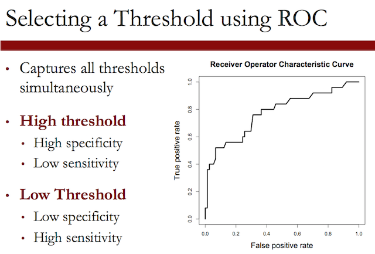
- The higher the threshold, or closer to \((0, 0)\), the higher the <<<<<<< HEAD specificity and the lower the sensitivity. The lower the threshold, or closer to \((1,1)\), the higher the sensitivity and lower the specificity. ======= specificity and the lower the sensitivity. The lower the threshold, or closer to \((1,1)\), the higher the sensitivity and lower the specificity. >>>>>>> origin/master
So which threshold value should you pick? You should select the best threshold for the trade-off you want to make.
- If you're more concerned with having a high specificity or low <<<<<<< HEAD false positive rate, pick the threshold that maximizes the true positive rate while keeping the false positive rate really low. A threshold around \((0.1, 0.5)\) on this ROC curve looks like a good choice in this case.
- On the other hand, if you're more concerned with having a high sensitivity or high true positive rate, pick a threshold that minimizes the false positive rate but has a very high true positive rate. A threshold around \((0.3, 0.8)\) looks like a good choice in this case. ======= false positive rate, pick the threshold that maximizes the true positive rate while keeping the false positive rate really low. A threshold around \((0.1, 0.5)\) on this ROC curve looks like a good choice in this case.
- On the other hand, if you're more concerned with having a high sensitivity or high true positive rate, pick a threshold that minimizes the false positive rate but has a very high true positive rate. A threshold around \((0.3, 0.8)\) looks like a good choice in this case. >>>>>>> origin/master
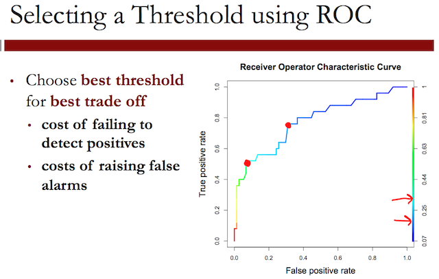
Recall that we made predictions on our training set and called them predictTrain. We'll use these predictions to create our ROC curve. First, we'll call the prediction function of ROCR. We'll call the output of this function ROCRpred, and then use the prediction function.
This function takes two arguments. The first is the predictions we made with our model, which we called predictTrain. The second argument is the true outcomes of our data points, which in our case, is qualityTrain$PoorCare.
Now, we need to use the performance function. This defines what we'd like to plot on the x and y-axes of our ROC curve. We'll call the output of this ROCRperf, and use the performance function, which takes as arguments the output of the prediction function, and then what we want on the x and y-axes.
writeLines("\n :: Install package only once") <<<<<<< HEAD ## install.packages('ROCR', repos='http://cran.rstudio.com/') library(ROCR) writeLines("\n :: Prediction function") ROCRpred = prediction(predictTrain, qualityTrain$PoorCare) writeLines("\n :: Performance function") ROCRperf = performance(ROCRpred, "tpr", "fpr") ======= ## install.packages('ROCR', repos='http://cran.rstudio.com/') library(ROCR) writeLines("\n :: Prediction function") ROCRpred = prediction(predictTrain, qualityTrain$PoorCare) writeLines("\n :: Performance function") ROCRperf = performance(ROCRpred, "tpr", "fpr") >>>>>>> origin/master
<<<<<<< HEAD
:: Install package only once
:: Prediction function
:: Performance function
=======
:: Install package only once
:: Prediction function
:: Performance function
>>>>>>> origin/master
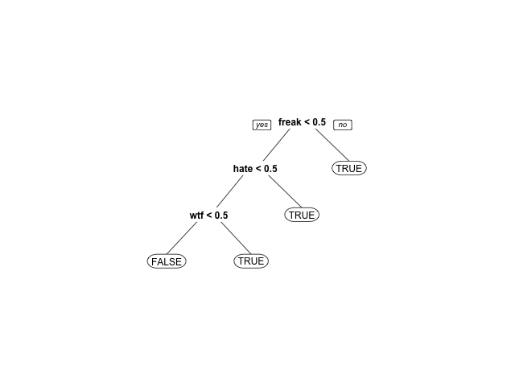
Figure 22: Add threshold labels to better pick up a right value of t
1.16 Quick Question (2 points possible)
1.16.1 Question a
Given this ROC curve, which threshold would you pick if you wanted to correctly identify a small group of patients who are receiving the worst care with high confidence?
1.16.1.1 Answer
Explanation
The threshold \(0.7\) is best to identify a small group of patients who are receiving the worst care with high confidence, since at this threshold we make very few false positive mistakes, and identify about 35% of the true positives.
The threshold \(t = 0.8\) is not a good choice, since it makes about the same number of false positives, but only identifies \(10\%\) of the true positives. The thresholds \(0.2\) and \(0.3\) both identify more of the true positives, but they make more false positive mistakes, so our confidence decreases.
1.16.2 Question b
Which threshold would you pick if you wanted to correctly identify half of the patients receiving poor care, while making as few errors as possible?
1.16.2.1 Answer
Explanation
The threshold \(0.3\) is the best choice in this scenerio. The threshold \(0.2\) also identifies over half of the patients receiving poor care, but it makes many more false positive mistakes. The thresholds \(0.7\) and \(0.8\) don't identify at least half of the patients receiving poor care.